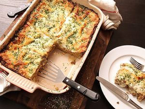

Lasagna
Homepage

Description
Lasagna is a classic Italian baked pasta dish made by layering wide, flat sheets of pasta with fillings such as ragù (a
meat-based sauce), béchamel (white sauce), cheeses (like ricotta, mozzarella, and Parmesan), and sometimes vegetables or
pesto.
The assembled dish is baked in the oven until the top is golden and bubbly, creating a rich, comforting meal.
Ingredients
mozzarella, and Parmigiano-Reggiano.
zucchini, spinach, garlic , herbs
béchamel (a creamy white sauce)
Steps
1 Prepare the meat sauce: Brown ground beef (or a mix of beef and pork) with onions, garlic, and herbs like basil and oregano. Add canned tomatoes, tomato paste, and seasonings, then simmer for at least 30 minutes to develop flavor
2 Make the cheese filling: Combine ricotta cheese, beaten eggs, grated Parmesan, chopped parsley, salt, and pepper to create a binding, creamy filling.
3 Assemble the lasagna: In a baking dish, layer ingredients in this order: a thin layer of meat sauce, then noodles, followed by ricotta mixture, mozzarella, and more sauce. Repeat layers 2–3 times, finishing with sauce and a generous topping of mozzarella and Parmesan.
4 Bake: Cover with foil and bake at 375°F (190°C) for 25–30 minutes, then uncover and bake 15–20 minutes more until golden and bubbly.